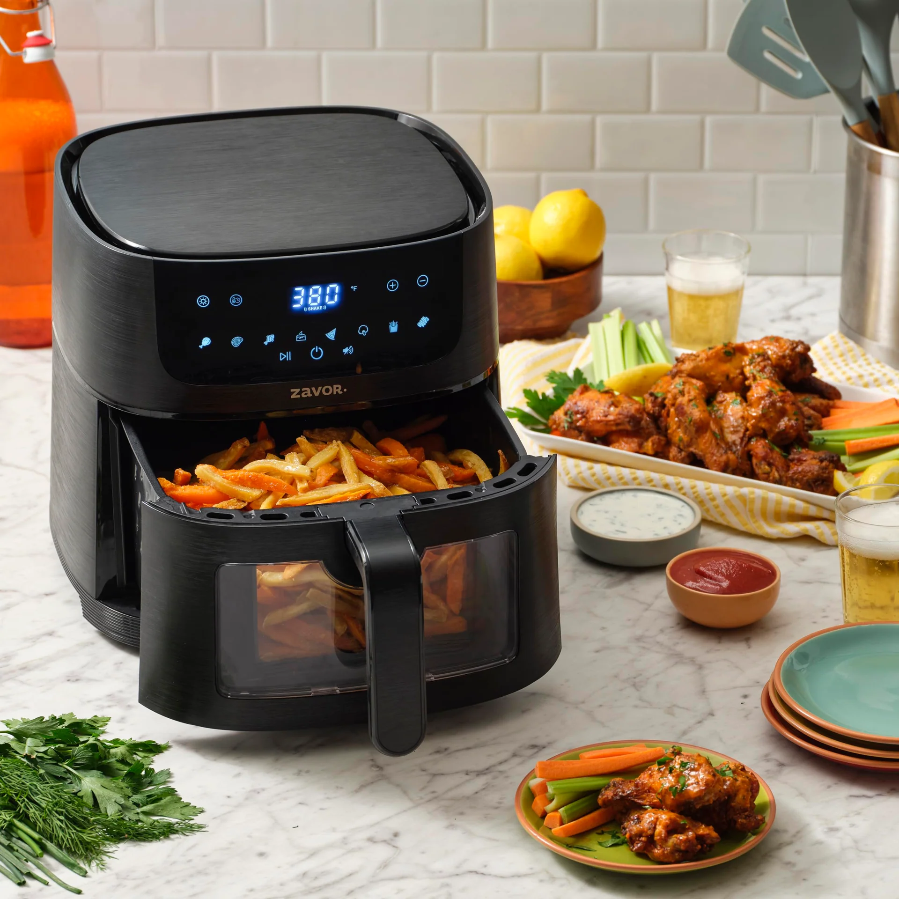

راهنمای خرید سرخکن بدون روغن: ظرفیت، سبد و توان مناسب
راهنمای انتخاب سرخکن بدون روغن بر اساس ظرفیت واقعی، شکل سبد، توان، نظافت، فضای آشپزخانه و الگوی استفاده؛ بدون وابستگی به برند یا قیمت لحظهای.
آخرین بازبینی: 2026-10-16 · راهنمای تحریریه سنجو

در سنجو هدف این راهنما انتخاب آگاهانه بر اساس کاربرد است، نه معرفی یک برنده مطلق. مشخصات مدلها میتواند تغییر کند؛ معیارها را با نیاز واقعی خودت تطبیق بده.
ظرفیت را با تعداد نفرات و نوع غذا بسنج
ظرفیت اسمی را با چیزی که معمولاً میپزی مقایسه کن. سیبزمینی، مرغ، سبزیجات و غذاهای حجیم فضای متفاوتی میگیرند. اگر اغلب برای یک یا دو نفر غذا درست میکنی، دستگاه خیلی بزرگ میتواند فضای بیشتری اشغال کند؛ اگر خانواده پرجمعیت است، سبد کوچک ممکن است مجبورَت کند چند مرحله پخت انجام بدهی.
شکل سبد از عدد لیتر مهمتر میشود
دو دستگاه با ظرفیت اسمی مشابه میتوانند سطح قابل استفاده متفاوتی داشته باشند. سبد پهن برای چیدن مواد در یک لایه مفید است، در حالی که سبد عمیق برای بعضی غذاها فضای حجمی بیشتری میدهد. ابعاد داخلی را در کنار ظرفیت بررسی کن.
تکسبد یا دو سبد؟
دو سبد زمانی مفید است که مرتب دو غذای متفاوت با زمان یا دمای جدا میپزی. در مقابل، یک سبد بزرگ برای غذای حجیم یکپارچه سادهتر است. مزیت دو سبد را فقط بهخاطر ظاهر دستگاه فرض نکن؛ ببین در برنامه غذایی تو واقعاً استفاده میشود یا نه.
توان بالاتر همیشه به معنی نتیجه بهتر نیست
توان روی سرعت گرمشدن و حفظ دما اثر دارد، اما طراحی گردش هوا، اندازه محفظه و کنترل دما هم مهماند. بهجای انتخاب صرفاً بر اساس وات، نتیجه پخت، یکنواختی و زمان پیشگرمایش را در بررسیهای معتبر دنبال کن.
نظافت را قبل از خرید تصور کن
سبد، سینی و پوشش داخلی باید بهراحتی جدا و تمیز شوند. شیارهای زیاد یا قطعاتی که دسترسی سخت دارند میتوانند استفاده روزانه را آزاردهنده کنند. دستور سازنده درباره شستوشو و ماشین ظرفشویی را بررسی کن.
فضای روی کابینت و تهویه
ابعاد بیرونی، محل بازشدن کشو یا در و فاصله لازم برای گردش هوا را اندازه بگیر. دستگاهی که همیشه باید از کابینت بیرون آورده شود احتمالاً کمتر استفاده میشود.
چکلیست نهایی
- کاربرد اصلی را مشخص کن.
- دو یا سه معیار اثرگذار را اولویتبندی کن.
- شرایط نگهداری و قطعات مصرفی را بررسی کن.
- مشخصات نهایی را پیش از خرید از سازنده یا فروشنده بررسی کن.
مطالب مرتبط: compare air fryer single vs dual basket · home